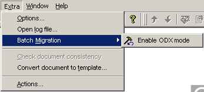

In order to improve the import/export roundtrip it is possible to store odx specific information in a CANdela document. The information is stored in attributes at specific CANdela elements. In order to create these attributes, the CANdela plug-in 'Enable ODX mode' has to be used.
The plug-in creates several CANdela attributes in a CDD file within attribute category ODX. The attributes are not necessary for Import or Export but if they exist they are used to store Odx-specific information during the Import that can be used by the Export.
It is recommended to run the plug-in for all CANdela files which are used for ODX export or Import.

Plugin Enable Odx Mode